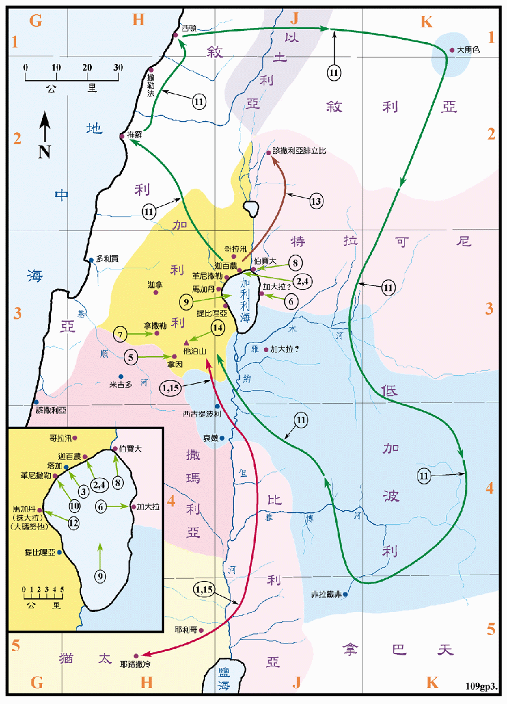

主后28至29年

在本图内，把迦百农城和加利利海四周视作一个地区，并且另有详图
行动线说明
| 序号 | 圣经 | 说明 |
|---|---|---|
| 1 | 太12:1-21，可2:23-3:12，路6:1-19 | 耶稣从耶路撒冷返加利利。 |
| 2 | 可3:13-19，路6:12-16 | 在迦百农附近拣选十二个门徒。 |
| 3 | 太5:1-7:29，路6:20-49 | 耶稣上山 (可能是在塔加) 训众论福 (即是登山宝训)。 |
| 4 | 太8:5-13，路7:1-10 | 在迦百农医好百夫长的仆人。 |
| 5 | 路7:11-17 | 在拿因叫寡妇的儿子复活。 |
| 太11:2-30，12:22-13:52，8:23-27，可3:20-4:41，路7:36-8:25，11:14-36 | 在加利利地诸工作。 | |
| 6 | 太8:28-34，9:18-34，可5:1-43，路8:26-56 | 在加大拉地方 (在路加福音中是格拉森地方) 赶出两个人身上的群鬼入猪群等事迹。 |
| 7 | 太13:54-58，可6:1-6 | 去拿撒勒，再次被拒。 |
| 太10:1-11:1，可6:7-13，路9:1-6 | 耶稣差遣十二个门徒出去宣传神国的道，并医治病人。 | |
| 8 | 太14:13-21，可6:30-44，路9:10-17，约6:1-14 | 在伯赛大附近，耶稣以五个饼，两条鱼给五千人吃饱后还有馀。 |
| 9 | 太14:22-33，可6:45-52，约6:16-21 | 耶稣夜间在海面上行走。 |
| 10 | 太14:34-36，可6:53-56 | 耶稣在革尼撒勒地方治好很多人的病。 |
| 11 | 太15:21-31，可7:24-37 | 耶稣往推罗西顿去，再经低加波利境内回加利利。 |
| 12 | 太15:32-39，可8:1-9 | 耶稣以七个饼，几条小鱼给四千人吃饱了还有馀。然后去马加丹的境界 (在马可福音中是大玛努他)。 |
| 13 | 太16:13-28，可8:27-9:1，路9:18-27 | 耶稣去该撒利亚腓立比，彼得在那里认耶稣是基督，主预言自己的死并应许天国。 |
| 14 | 太17:1-21，可9:2-29，路9:28-43 | 耶稣登山 (可能是在他泊山) 后变像。 |
| 太17:22-18:35，可9:30-50，路9:43-62 | 回迦百农工作。 | |
| 15 | 太19:1 | 去耶路撒冷。 |
主耶稣传道的第二年，大部份时间是在加利利地区，也花了很多的时间到推罗、西顿和低加波利等外邦人的地区去。这些地区都是罗马帝国的属地，所以主耶稣可以通行无阻，而且语言也相通，只是当地除了原有的宗教之外，并深受希腊文化的影响，所以具有很高的文化水准，但是宗教的邪恶、道德的沦落，再加上充斥於地方上传统信仰和希腊的寺庙，处处显得这是极需福音之地。